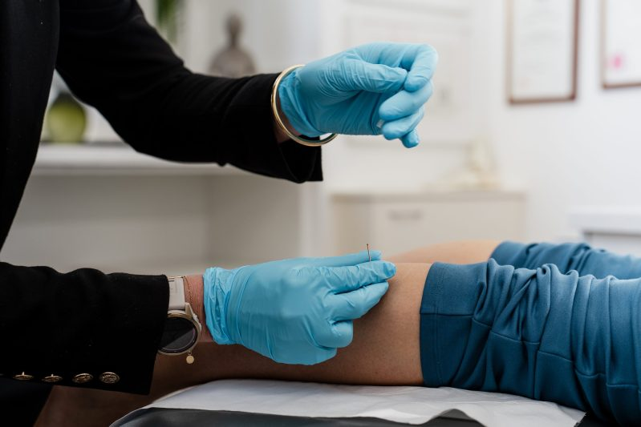

Whether you are looking to maintain your general foot health or are managing pain in the feet, ankles, knees, legs, or hips, our mission is to focus on prevention and early diagnosis to keep adults and children moving comfortably.
Professional Foot and Ankle Care for Wollondilly Residents
Looking for trusted podiatrists in Wollondilly? At The Bowral Foot Clinic, we provide expert podiatry services for patients across the Southern Highlands and Wollondilly Shire. From heel pain and custom orthotics to sports podiatry and general foot care, our team helps you stay active, healthy, and pain-free.
How Do We Help?
General Podiatry
Biomechanical Assessment
Sports Injuries
Custom Orthotics
Meet the Team
The Bowral Foot Clinic is committed to relieving your foot ailments effectively, efficiently, and comfortably no matter how small or complex the issue is.
Range of Services
The Bowral Foot Clinic offers expert podiatry care to treat a wide range of foot and leg concerns, simple to complex, with comfort, precision, and care.
Problems we Treat
Regardless of what your foot and ankle trouble may be, the physicians at The Bowral Foot Clinic will work tirelessly to help you feel better.
Problems We Treat
- Corns and Calluses
- Ingrown Toe Nails
- Fungal Nails
- Arthritis
- Ball of Foot Pain
- Plantar Warts
- Hammer Toes
- Plantar Fasciitis
- Achillies Tendinopathy
- Sever's Disease
- Osgood Schlatters Disease
- Pigeon Toe and Out Toe
- Heel Pain and Heel Spurs
- Cracked Heels and dry skin
- Knee Pain and Injuries
- Neuromas
- Hip Pain and Lower back pain
- Shin Pain
- Flat Feet
- Bunions
- Shin Splints
- High Arches
- Childrens Conditions
- Growing Pains in children


Our Service
- Biomechanical Assessments
- Gait Analysis
- Children's Podiatry
- Prolotherapy
- Diabetic Foot Assessment
- Dry Needling
- Strengthening and Stretching
- Shockwave Therapy
- Wart Treatment
- Foot Mobilisation Therapy
- General Podiatry and Foot Health
- Orthotic Therapy
- Injection Therapy
- Custom Orthotics
- Nail Cutting and Callus removal
- Ulcer care and wound treatment
Why Choose The Bowral Foot Clinic?
Conveniently located in the heart of Bowral, our clinic is easily accessible for patients from Picton, Tahmoor, Bargo, Wilton, Appin, Buxton, and surrounding areas of Wollondilly.
We take pride in offering evidence-based treatment, modern technology, and a caring approach so you feel supported at every step of your foot health journey.

Office
Shop 3, 2 - 4 Boolwey Street, Bowral 2576
Contact
bowralfootclinic@gmail.com
(02) 4005 2668
Open Hours
Monday to Friday: 8:30 am to 5:30 pm
Saturday: 8:30 am to 12 pm
Sunday: Closed